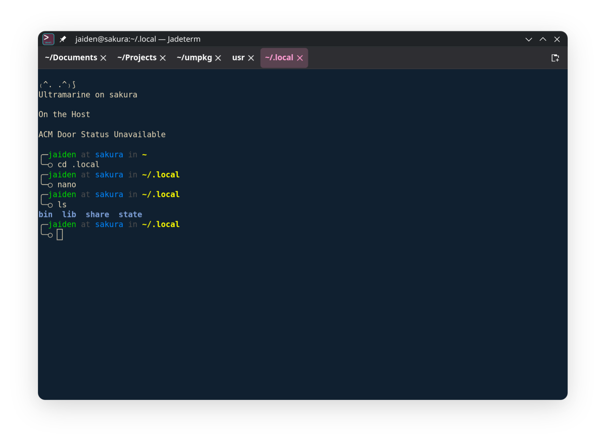
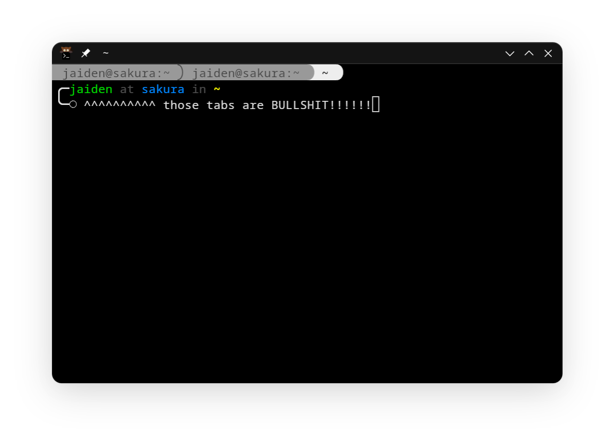

thoughts on terminals (and being pissed off about them)
every terminal sucks.
recently, i was talking to my good friend Tulip, she noticed that ghostty was on my dock, and informed me that the people who made it were less than scrupulous.
i was already pretty pissed off with ghostty at this point, especially the fact that due to being written in zig, it's very difficult to package. so i get no flatpak of it for my atomic systems.
that night i tried 12 other terminals, including going back to warp, my old default. and i just didn't like any of them. too slow, too ugly, made by bad people, the tabs are rendered as text in the terminal rather than UI elements, etc, etc
so i made my own thing, which sucks but works. i haven't been able to switch yet, but i'm getting closer. this also sucks. it sucks that i had to make something because everything else sucked.

this brings up a bigger issue i've been noticing. there's so many terminals, but none of them are good. some try to be good, and make big leaps and bounds, like warp making the terminal behave like an IDE (before the agentic coding bullshit) or the simple fact that ghostty looks in place on both of my desktops while still having tabs as real ui elements instead of inside the terminal. but most of them suck! like the fact that kitty has those nasty in-terminal tabs, that konsole has the world's ugliest and most giant toolbar, or that ptyxis is dead, and gnome console (kgx) has no settings. there is no good terminal.

so i'm still on ghostty. not because i like it, but because i have shit to do and don't have time to change it. if anybody has suggestions for me to switch to please hit me@jaiden.sh. i'll finish jadeterm at some point, but dear god all terminals suck.🐾